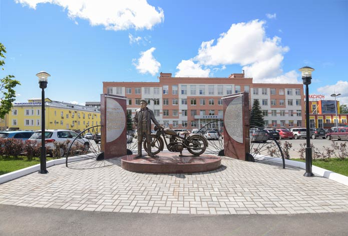

11 июня 1930 года Президиумом Высшего Совета Народного хозяйства СССР принято решение создать в Ижевске первый в стране завод по выпуску отечественных серийных мотоциклов. Он стал частью важного государственного плана индустриализации страны. Выбор Ижевска для строительства мотоциклетного завода не случаен. Здесь под руководством талантливого конструктора Петра Можарова были разработаны и изготовлены первые опытные модели мотоциклов «Иж». Именно по его инициативе создан первый в стране мотозавод.
1 мая 1933 года в бывшей оружейной мастерской Березина на ул. Базарной заработали первые станки мотозавода, дав начало славной истории большого предприятия. 2 сентября Народный комиссариат финансов произвел его государственную регистрацию. Возглавил Ижевский мотозавод Иван Чекмарёв. Под его руководством мотозавод быстро набирает обороты, осваивая серийное производство мотоциклов Иж-7. В 1938 году была освоена модель мотоцикла «Иж-8», через год — «Иж-9», еще через год — запущена отладочная партия мотоцикла «Иж-12». Всего за 8 предвоенных лет было выпущено 17 тысяч мотоциклов. Знаменательным событием стал первый в истории женский мотопробег, который стартовал 24 июля 1936 года по маршруту Ижевск-Казань-Владимир-Ногинск-Москва. Это уникальное мероприятие преследовало несколько важнейших целей: испытать конструкцию и удобство вождения мотоциклов «Иж-7» по любым дорогам страны; рапортовать правительству о первых результатах серийного выпуска мотоциклов в Ижевске; показать, что женщины способны наравне с мужчинами на отвагу, мужество и выносливость.

В 1991 году предприятие преобразовано в акционерное общество. Зарегистрировано АООТ «Аксион» как правопреемник Государственного предприятия «Ижевский мотозавод», затем переименовано в ОАО «Ижевский мотозавод «Аксион».
Важным этапом с начала 90-х годов стала организация производства наземной аппаратуры управления ракетными комплексами «Тополь». Это открыло новую, современную страницу в истории «Аксиона».
Сегодня АО «Ижевский мотозавод «Аксион-холдинг» продолжает успешно развивать различные направления высокотехнологичного наукоемкого производства продукции в интересах страны. Осуществляется выпуск изделий специальной техники для всех видов и родов войск Вооруженных Сил России, а также востребованная и конкурентоспособная продукция гражданского назначения: медицинская и бытовая техника, энергосберегающее оборудование, лифты, электронно-коллиматорные прицелы и многое другое.
В 2008 году предприятие награждено грамотой начальника Главного штаба ВМФ адмирала М. А. Абрамова за достигнутые успехи в создании телекоммуникационных и автоматизированных систем управления Военно-морского флота, обеспечивших успешное выполнение задач, поставленных Верховным Главнокомандующим Российской Федерации. Предприятию вручена Благодарность Президента Российской Федерации Д. А. Медведева «За большой вклад в создание и производство специальной техники».
В 2019 году коллективу АО «Ижевский мотозавод «Аксион-холдинг» вручена благодарность Президента Российской Федерации В. В. Путина. Коллектив предприятия неоднократно заносился на Доску Почета Удмуртской Республики, группы работников становились лауреатами Государственной премии Удмуртской Республики, сотрудники «Аксиона» ежегодно награждаются государственными и ведомственными наградами Российской Федерации.
Весомый вклад вносит «Аксион» в создание привлекательного городского ландшафта. Находясь в центре Ижевска, завод создает новые памятные места, увековечивает важные исторические события. В 2016–2018 годах состоялось открытие памятника первому космонавту Ю. А. Гагарину, скульптурной композиции «Встреча под часами», памятника создателю первых серийных отечественных мотоциклов П. В. Можарову, Галереи Почёта с 25 барельефами людей, внёсших весомый вклад в создание и развитие предприятия.